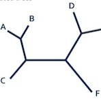
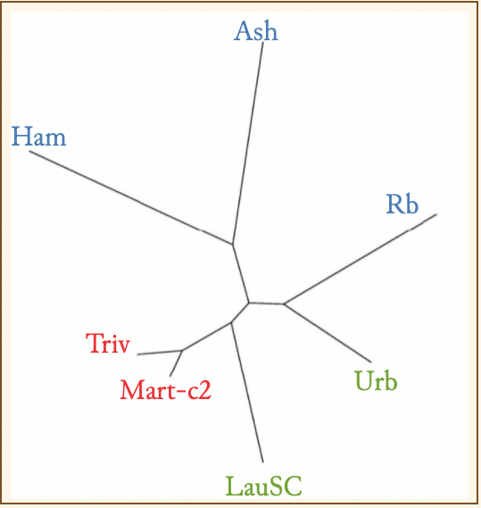

Show witnessesFind variant sitesAbout variant sites search
At many places in the Collation and VBase views, you will see this symbol to the right of a line:

If you hover over this image (computer) or press on it (mobile device) you will see a diagram like this:

This is what we call a "variant map." These are hypotheses of relationships among the manuscripts, created by phylogenetic software developed by evolutionary biologists to explore relationships among species. For further explanation of why and how we use this software, see Editorial Matter (PDF) VI. The Phylogenetic Analysis.
In this variant map of the readings for the first words of Inferno 2 103 we can see that the pair Triv Mart-c2 agree in one reading ("Beatrice disse"), the pair Ash Ham together with Rb agree in another reading ("Disse Beatrice"; while LauSC agrees with Urb in a third reading ("E disse Beatrice"). Note that in the VBase and Collation views the variants and manuscripts change color when you invoke the variant map for that variant: thus Beatrice disse, disse Beatrice and E disse Beatrice.
You can use VBase for complex searches on variants, according to their distribution among the manuscripts. For example, you can find variants likely to have been introduced into the common ancestor of Mart and Triv with this search:
The first line specifies that the variant must be in Triv.
The second line specifies that the variant must be in ">0" of Mart and Mart-c2: that is either present in the Aldine edition and not altered by Luca Martini ('Mart'), or introduced by Luca into the text ('Mart-c2'), or in both Mart and Mart-c2.
The third line specifies that the variant must not be in either Ash or Ham: that is, not likely to have been introduced by a putative common ancestor of Mart/Triv and Ash/Ham.
The fourth line specifies that the variant can not be in more than four manuscripts (including Mart and Triv). If it is in so many, it is likely to have been present in the ancestor to the whole tradition.
Variant site search is a new VBase tool, introduced in this second edition.
Sometimes you want to find places where one set of manuscripts has one reading and a second set a different reading. Consider this search:
The first line specifies that we are looking for places where there are variants ("variant sites") where Ash and Ham agree on a reading.
The second line specifies that we are looking for variant sites where, as well as Ash and Ham agreeing in one reading, Mart/Mart-c2 and Triv agree in a separate reading.
(Notice how the search result changes when you select and unselect "Find variant sites.")